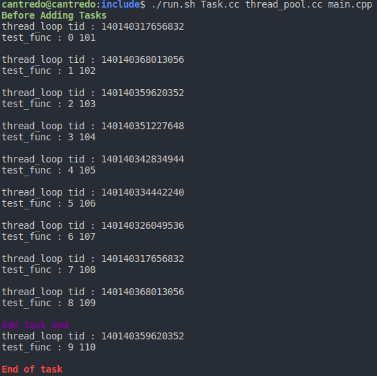
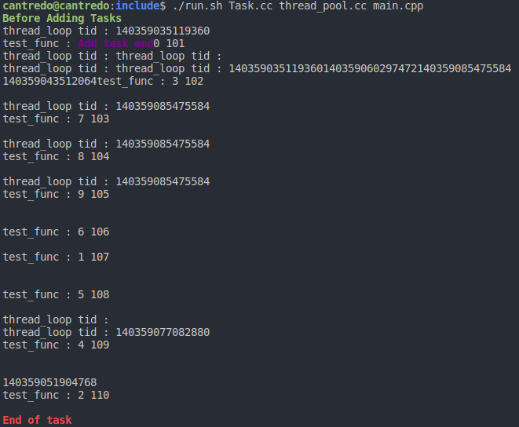

线程池管理工具(C++)
利用C++开发一个Linux系统下线程池管理类。优点如下：
- 非常方便的对多线程的数量进行管理；
- 能够执行我们所传入的任意函数；
- 执行过程中可以按优先级顺序执行。
解决方案如下：
- 对于线程池类，可以设置一个数组，根据传入多线程的数量进行空间的开辟。
- 可以将不统一的需要执行的一个函数进行打包，打包成一个统一的某一个类Task的对象。可以将这些对象放入一个队列缓冲区中，线程池可以从中选出函数进行执行。
- 可以使用优先队列，将任务按优先级进行排序。(待实现)
Task类
Task.h
1 |
|
Task.cc
1 |
|
thread_pool类
thread_pool.h
1 |
|
thread_pool.cc
1 |
|
主程序main.cpp
1 |
|
其他头文件color.h
仅仅是用于在终端输出有颜色的字符串，比如main.cpp文件中第31行cout << RED_HL("End of task") << endl;
1 |
使用方法
将以上头文件.h文件和相应的源文件.cc文件放入同一个文件夹，使用命令：
1 | g++ -std=c++11 main.cpp Task.cc thread_pool.cc -o a.out -lpthread && ./a.out && rm a.out |
执行结果
在main.cpp文件main函数中加上std::this_thread::sleep_for(std::chrono::milliseconds(200));后，执行结果如图所示：

将其注释掉，执行结果如图所示：

可以看出，加与不加延时，线程执行顺序都是不确定的(可由线程tid看出)，这是由于在多线程中执行顺序是由操作系统决定的，我们按顺序添加任务，但操作系统不一定按这个顺序执行。
但是加上延时的输出看起来比不加上延时的输出好很多，这是因为对于cout来说，他是线程不安全的，并不是一个原子操作，在多线程时很可能由于多个线程在同时输出，导致输出杂乱，加上延时后即可适当延缓这种情况。但这并没有从根本上解决问题，之后会进行一个线程安全的日志输出程序，会对此进行优化。